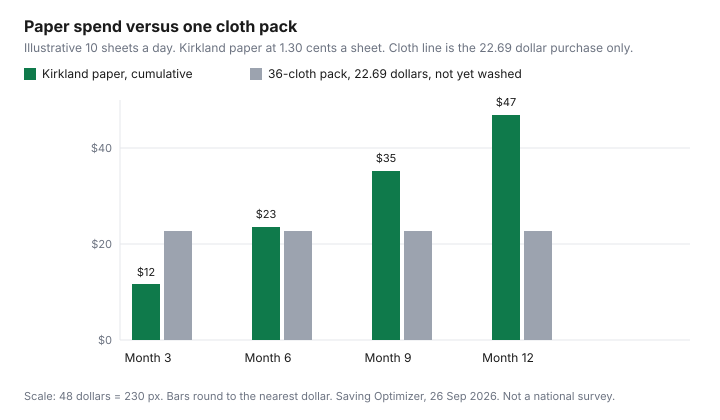

Household Items and Supplies · Canada
Paper Towels vs Microfibre and Reusable Cloths in Canada: A Real Cost-per-Year Comparison
A household that finishes a warehouse pack of paper towel every month is not failing a trend. It is buying a product with a sheet count. Reusable cloths are cheaper only after you divide both sides the same way: cents per sheet on one side, pack price plus washes on the other. This page uses prices that loaded on 26 Sep 2026. Where a Swedish dishcloth tag or a Dollarama cloth tag did not load, the cell stays empty.
Sheet math for toilet paper is the same habit, on the per-100-sheets guide. The closet that holds both the roll and the cloths is the smaller cleaning closet. Which banner wins on a given week is the Dollarama, Walmart, and Costco comparison.
Disclosure: Microfibre packs sold through Amazon.ca storefronts are an offer type. Saving Optimizer may earn a commission if we later add a partner link. We do not currently claim an Amazon partnership. A storefront link would not change the cents-per-sheet arithmetic. Education only.
Key takeaways
- On the Costco East list posted 10 Jun 2026, Kirkland paper towel was 1.30 cents a sheet, Sponge Towels 1.73 cents after a dated saving, and Bounty Plus 2.98 cents.
- An illustrative 10 sheets a day of that Kirkland roll is about $47.51 a year. Ten is a worksheet input, not a Canadian average.
- A Costco same-day listing checked 26 Sep 2026 had 36 Kirkland microfibre cloths at $22.69. PartSource had 36 Simoniz cloths at $32.99. Neither page printed a wash-cycle life.
- Washing cancels the saving only when you add a load. Ontario off-peak is 9.8 cents per kWh, BC Hydro Step 1 is 11.87 cents, and Hydro-Québec's first Rate D tier is 7.065 cents. Delivery is extra.
- Health Canada says paper towels for kitchen surfaces, or dishcloths changed daily and washed on the hot cycle. Raw-meat juices belong in that rule.
What a year of paper towels costs a Canadian household (per-sheet table)
Rolls are the wrong unit. The Costco East cleaning list posted 10 Jun 2026, for a flyer window of 8 Jun to 5 Jul 2026 in Ontario and Atlantic Canada, prints sheets or metres. Kirkland Signature paper towel is 12 rolls of 160 sheets, 1,920 sheets, at $24.99. $24.99 divided by 1,920 is 1.30 cents a sheet, or $1.30 per 100 sheets. Sponge Towels Premium is 12 rolls of 106 sheets, 1,272 sheets, at $21.99 after a $6.00 instant saving the list said expired 5 Jul 2026. That is 1.73 cents a sheet. Bounty Plus is 12 rolls of 91 sheets, 1,092 sheets, at $32.49, which is 2.98 cents a sheet. Cascades is priced by length, 12 times 62.48 m at $14.99, which is 2.00 cents per metre. It is not in the per-sheet column.
A year is sheets per day times 365 times the cents. Nobody's day was measured for this draft. The column "at 10 sheets a day" is a blank you replace. Ten Kirkland sheets a day is 3,650 sheets, about $47.51. The same pace on Sponge Towels is about $63.10. On Bounty Plus it is about $108.60. If your kitchen pulls 20 sheets a day, double the dollars. If you already tracked a month of rolls, use that count instead of 10.
| Product | Pack | Price | Per sheet or metre | Illustrative year at 10 sheets a day |
|---|---|---|---|---|
| Kirkland Signature paper towel | 12 × 160 sheets (1,920) | $24.99 | 1.30 cents a sheet | $47.51 |
| Sponge Towels Premium, after a $6 instant saving the list said expired 5 Jul 2026 | 12 × 106 sheets (1,272) | $21.99 | 1.73 cents a sheet | $63.10 |
| Bounty Plus | 12 × 91 sheets (1,092) | $32.49 | 2.98 cents a sheet | $108.60 |
| Cascades paper towel | 12 × 62.48 m (749.76 m) | $14.99 | 2.00 cents a metre | Not a sheet count |
Microfibre, Swedish dishcloths, and cut-up cotton: purchase cost and lifespan
Two cloth packs had a price and a count on 26 Sep 2026. A Costco same-day listing showed Kirkland Signature 16-by-16-inch yellow ultra-plush microfibre, 36 cloths, at $22.69, which the listing also printed as $0.63 each. The listing says the cloths are 80 percent polyester and 20 percent polyamide, scratch-free, and machine washable. It does not say how many washes they survive. PartSource listed Simoniz microfibre cloths, 36 pack, at $32.99, about 92 cents a cloth. The page calls them washable and reusable for drying, dusting, and polishing. It does not print a cycle count either. Without that count, "lasts a year" is a guess, and this guide does not guess.
A Swedish dishcloth price on a Canadian retailer page did not load on 26 Sep 2026, so there is no cents-per-cloth figure and no manufacturer lifespan to quote. If you buy one, write the pack price, the cloth count, and any wash limit printed on the box, then divide. Cut-up cotton from a T-shirt you already own has a purchase price of zero. Its cost is the wash, and the limit is when the cloth stops wiping. Old towels are the same worksheet. Do not invent a thrift-store price to make the cotton look expensive or cheap.
Laundry cost of reusables at typical provincial electricity rates
The washer bill is kilowatt-hours times the rate, and only for a load you would not have run. Cloths that ride with the weekly laundry do not get their own line. A dedicated "cloths only" cycle does. No page opened for this draft stated a kilowatt-hour figure for a microfibre wash, so the table stops at the rate. Multiply by the kilowatt-hours you read on a plug monitor or on the washer's energy label. The dryer's share, which is usually larger than the washer's, is the cold-water laundry guide.
These are commodity rates, not the whole bill. Delivery, rate riders, and a daily basic charge still sit on the statement. Ontario figures are the Ontario Energy Board's Regulated Price Plan prices set for 1 Nov 2025. B.C. figures are BC Hydro Rate Schedule 1101 in the electric tariff text opened 26 Sep 2026: Step 1 is the first 675 kWh in a monthly bill, or 1,350 kWh bi-monthly, pro-rated daily, at 11.87 cents, then 14.08 cents, plus a 23.44 cent daily basic. Québec figures are Hydro-Québec Rate D in the electricity rates in force 1 Apr 2026: 7.065 cents per kWh up to 40 kWh a day, then 11.142 cents, plus 46.154 cents a day for system access. The Ontario clock, including ultra-low overnight at 3.9 cents and weekday 4 p.m. to 9 p.m. at 39.1 cents, is the TOU, tiered, and ULO guide.
| Rate | Cents per kWh | What the cent covers |
|---|---|---|
| Ontario TOU off-peak | 9.8 | Electricity line only. Weeknights, weekends, and holidays. |
| Ontario TOU mid-peak | 15.7 | Electricity line only. Hours flip on 1 May and 1 Nov. |
| Ontario TOU on-peak | 20.3 | Electricity line only. |
| BC Hydro Step 1 (RS 1101) | 11.87 | Energy charge up to the monthly step. Basic charge is 23.44 cents a day. Riders extra. |
| BC Hydro Step 2 (RS 1101) | 14.08 | Energy charge above the step. |
| Hydro-Québec Rate D, first tier | 7.065 | Up to 40 kWh a day in the billing period. Access charge is 46.154 cents a day. |
| Hydro-Québec Rate D, second tier | 11.142 | Remaining energy in that period. |
The hybrid system: keep a roll for grease and raw meat, go reusable for the rest
Health Canada's page "Food safety and you" says to use paper towels to wipe kitchen surfaces. Otherwise, change dishcloths daily to avoid cross-contamination. The safe-food-handling page says to consider paper towels, and if you use cloth towels, wash them often in the hot cycle of the washing machine. It also says to avoid sponges because they are harder to keep free of bacteria. The page for children under five repeats paper towels and a daily cloth change, and says to clean sinks and surfaces immediately after raw meat, poultry, fish, or seafood.
That is the hybrid, in the department's words rather than a slogan. Keep a roll for raw-meat juices and for grease you do not want sitting in a damp cloth. Use microfibre for water spills, glass, and dust, and put those cloths in a hot wash instead of leaving them on the faucet. A cloth that wipes raw poultry and then wipes the counter has not saved money. It has moved bacteria. The bleach sanitizer Health Canada prints for counters, 5 mL of household bleach in 750 mL of water, then a rinse, is a separate step from the cloth decision.
Where to buy cheap microfibre in Canada (Dollarama, Costco, Canadian Tire, auto aisles)
Cheap means cents per cloth you will still use after washing, not the lowest sticker in the aisle. The Costco same-day Kirkland pack at $22.69 for 36 is 63 cents a cloth, and the cloths are 16 inches square. The PartSource Simoniz pack at $32.99 for 36 is about 92 cents a cloth. PartSource describes them as all-purpose cloths, which is the auto-aisle version of the same product: drying, dusting, polishing. A Canadian Tire store tag and a Dollarama tag did not load on 26 Sep 2026, so this guide does not declare either banner the winner. If the Dollarama pack is a smaller count at a low sticker, divide before you celebrate. The banner guide is where unit price beats the store's reputation.
Amazon.ca listings for microfibre packs are an offer type, with the disclosure above. A marketplace listing without a seller you can return to is not automatically the 63-cent cloth. Read the count and the size. A 10-pack of small glass cloths is a different product from a 36-pack of 16-inch towels.
Break-even chart: months until reusables pay for themselves
Purchase-only break-even ignores washing and ignores cloth death. It still answers the first question: how many months of paper equal the cloth pack. At 10 Kirkland sheets a day, a 30-day month is 300 sheets times 1.30 cents, about $3.90. The $22.69 Kirkland cloth pack divided by $3.90 is about 5.8 months. At month 6 on the chart, cumulative paper is about $23 and has passed the cloth purchase. At month 12, paper is about $47 and the cloth line is still $22.69, because no replacement pack and no electricity have been added. If the cloths are in the garbage at month 4, the chart is wrong for your house. If you use 5 sheets a day, the cross happens near month 12. Write your own sheet count on the caption before you treat 5.8 as a promise.

Sources & date stamps
- Costco East cleaning list, posted 10 Jun 2026, opened 26 Sep 2026: Kirkland paper towel 12 × 160 sheets, $24.99; Sponge Towels Premium 12 × 106, $21.99 after a $6.00 instant saving the list said expired 5 Jul 2026; Bounty Plus 12 × 91, $32.49; Cascades 12 × 62.48 m, $14.99.
- Costco same-day listing, checked 26 Sep 2026: Kirkland Signature 16-by-16-inch ultra-plush microfibre, 36 cloths, $22.69 ($0.63 each), machine washable. No wash-cycle count.
- PartSource, checked 26 Sep 2026: Simoniz microfibre cloths, 36 pack, $32.99. Washable. No cycle count.
- Ontario Energy Board electricity rates page, opened 26 Sep 2026: TOU 9.8 / 15.7 / 20.3 cents per kWh, prices set for 1 Nov 2025.
- BC Hydro electric tariff, RS 1101 text opened 26 Sep 2026: Step 1 11.87 cents, Step 2 14.08 cents, basic charge 23.44 cents a day. Rate increase of 0.59 percent effective 1 Apr 2026 under BCUC Order G-42-25.
- Hydro-Québec electricity rates in force 1 Apr 2026, opened 26 Sep 2026: Rate D 46.154 cents a day, 7.065 cents then 11.142 cents per kWh.
- Health Canada, "Food safety and you" and "Safe food handling in the home," opened 26 Sep 2026: paper towels to wipe kitchen surfaces, or dishcloths changed daily and cloth towels washed often on the hot cycle. Sponges are harder to keep free of bacteria.
Frequently asked questions
How much does a year of paper towels cost?
It depends on sheets, not rolls. On the Costco East list posted 10 Jun 2026, Kirkland Signature paper towel was 12 rolls of 160 sheets, $24.99, which is 1.30 cents a sheet. At an illustrative 10 sheets a day, that is about $47.51 a year. Bounty Plus on the same list was 2.98 cents a sheet, about $108.60 at the same pace. Replace 10 with the sheets your household actually pulls.
Do microfibre cloths really save money?
They can, once the pack price is lower than the paper you stop buying, and only if the cloths last. A Costco same-day listing checked 26 Sep 2026 priced Kirkland 16-by-16-inch ultra-plush microfibre, 36 cloths, at $22.69. At the illustrative 10 Kirkland paper sheets a day, that purchase equals about 5.8 months of paper. No wash-cycle count was printed on the cloth pages opened for this guide, so lifespan stays on the package you buy.
Does washing reusables cancel the savings?
Only if you run a washer you would not have run. A cloth tossed into a load you were already doing adds almost no electricity. A dedicated load costs the kilowatt-hours on your machine times your rate. Ontario off-peak is 9.8 cents per kWh from 1 Nov 2025. BC Hydro Step 1 is 11.87 cents. Hydro-Québec Rate D's first tier is 7.065 cents from 1 Apr 2026. Delivery is extra. A kilowatt-hour per cloth load was not on a page opened here.
When should I still use paper towels?
Health Canada's food-safety pages say to use paper towels to wipe kitchen surfaces, or to change dishcloths daily and wash cloth towels often on the hot cycle. They also say to avoid sponges because they are harder to keep free of bacteria. Raw meat, poultry, fish, and seafood juices are the case for a sheet you throw out, or for a cloth that goes straight into a hot wash. Grease on a cloth that sits damp on the counter is the same problem.
Where can I buy cheap microfibre in Canada?
Two prices loaded on 26 Sep 2026. Costco's same-day listing had Kirkland ultra-plush microfibre, 36 cloths, at $22.69. PartSource listed Simoniz microfibre cloths, 36 pack, at $32.99, described as washable cloths for drying, dusting, and polishing. A Dollarama microfibre tag and a Canadian Tire warehouse tag did not load, so they are not priced here. Divide whatever the shelf says by the cloth count before you decide it is cheap.